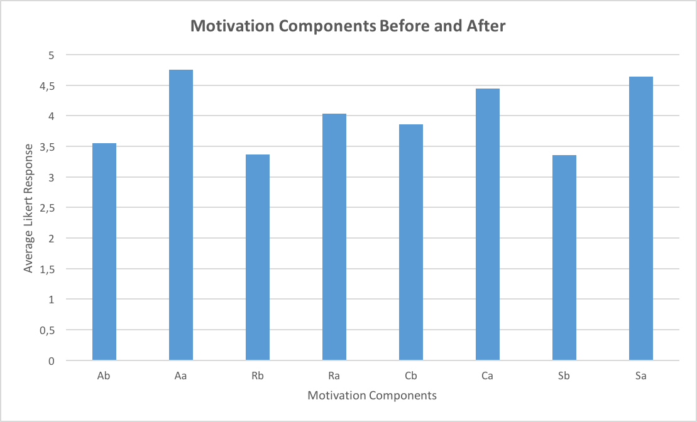

Robot, Movement, and Control - Josh di Bona
Introduction
We have seen the use of robots increase over the years, mainly in the Engineering Department, however not in the Computer Science Department. Given the expense and work required to introduce the use of robots into a new curriculum for CS1, there exists president for further testing and comparisons to the current educational tool being used. This section of the project proposes that robots could be beneficial to learning the basic concepts of computer science by increasing student's motivation to learn, especially in the CSC1010H course, which is an extended degree program of the mainstream CS1 course. Research was done into a few of the previous experiments that had been done in the area as to see what worked and what didn't when introducing robots into the curriculum. In the end it was proposed that a complete Educational Robot Platform would be built, consisting of a robot, built from scratch, by combining different inexpensive parts, which has two wheels and offers a range of movement functions, similar to those provided by the students current tool used in lectures, Python Turtle.
Robot Design
The robot makes use of the following hardware:
- Magician Chassis
- Raspberry Pi 3
- RaspiRobotBoard
- Romoss 10500mah Powerbank

Software
The Robot Wrapper class provides access to the movement and features module. The Movement module provides the following:
- Contains the robot's movement to grid blocks and makes sure it stays within its enclosure
- Allows for movement in 8 directions
- Provides high-level methods for moving forwards/backwards and rotating
- Has methods which allow the robot to be returned to its start position
- Has methods for pathfinding, allowing the robot to be easily moved around the grid whilst avoiding obstacles
Results
The chart below shows the Motivation questionnaire results, where the average for each of the 4 components of motivation were compared before and after the experiment.
Conclusions
The results found in the analysis of the motivational survey, consisting of the four ACRS components show quite a significant difference. There is a clear increase in overall motivation. When the components were analysed separately it was found that there was a more significant increase in the Attention and Satisfaction components whilst the Relevance and Confidence components were still significant, but not by as much. These results come as expected, from previous papers as well as personal experience from creating this software, the hardware component of the robot does appear to affect the confidence of the participants, because the hardware isn't as reliable as an IDE. This is an important component as students, especially when they are new to the field and are starting to learn the basic concepts of programming, have to have confidence in the tools they are using. The relevance component has also come up before as you cant expect everyone to be interested in robotics, the ones that aren't that amazed by the idea would see them as irrelevant in learning to program, they might prefer to learn whilst creating applications for a smartphone. However, the system does attempt to abstract the hardware into a high-level language to help the focus of the assignments be on the code rather than the hardware. Allowing the robot to have more visual feedback from the code than other basic tools such as an IDE. A possible solution to the problem with confidence would be to spend money on higher quality parts or have one designed especially from scratch instead of combining different parts.